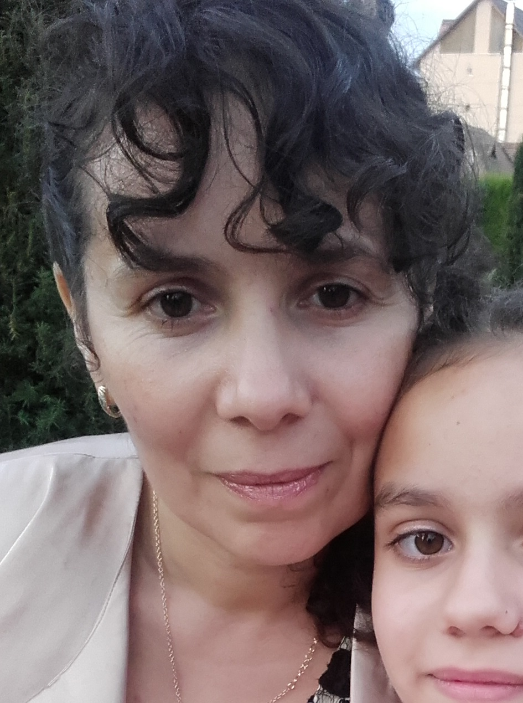
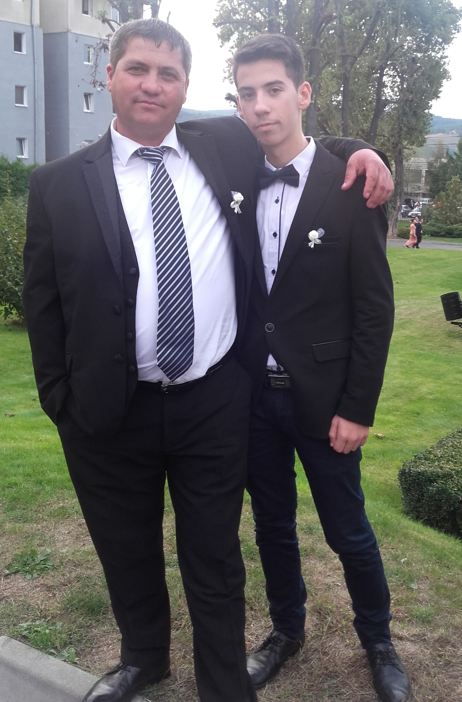
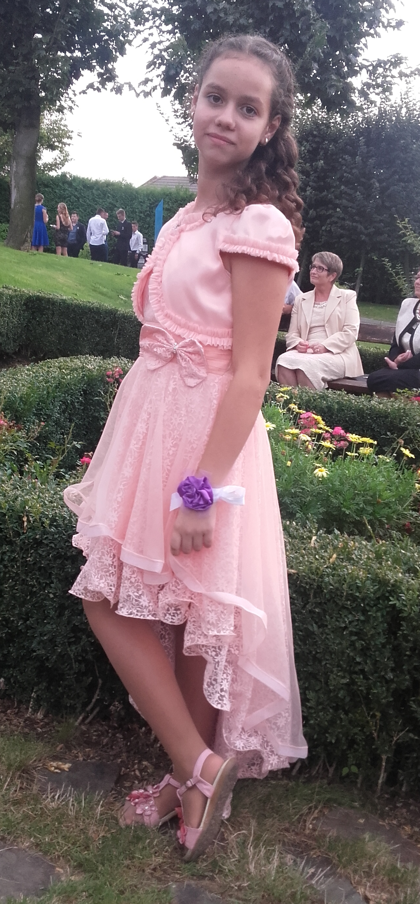
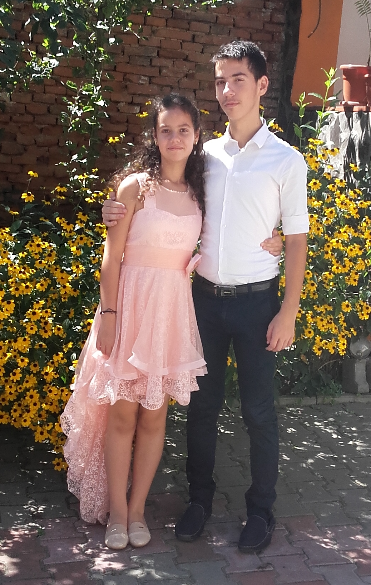
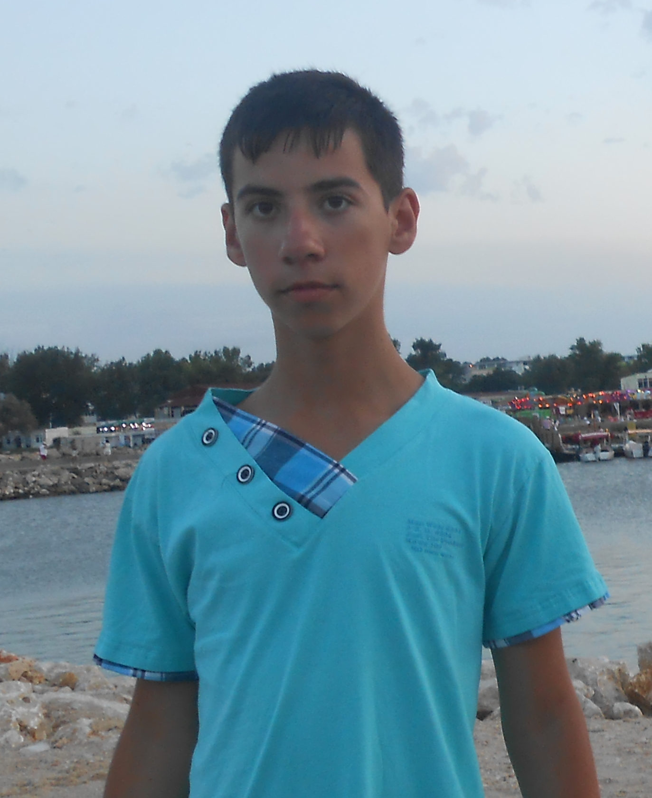
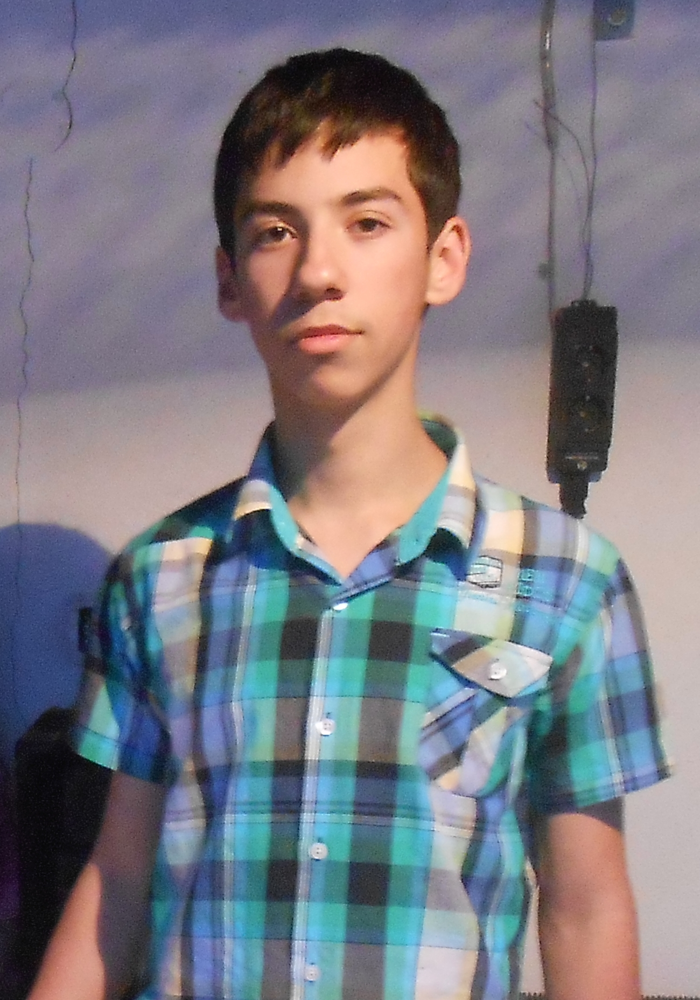
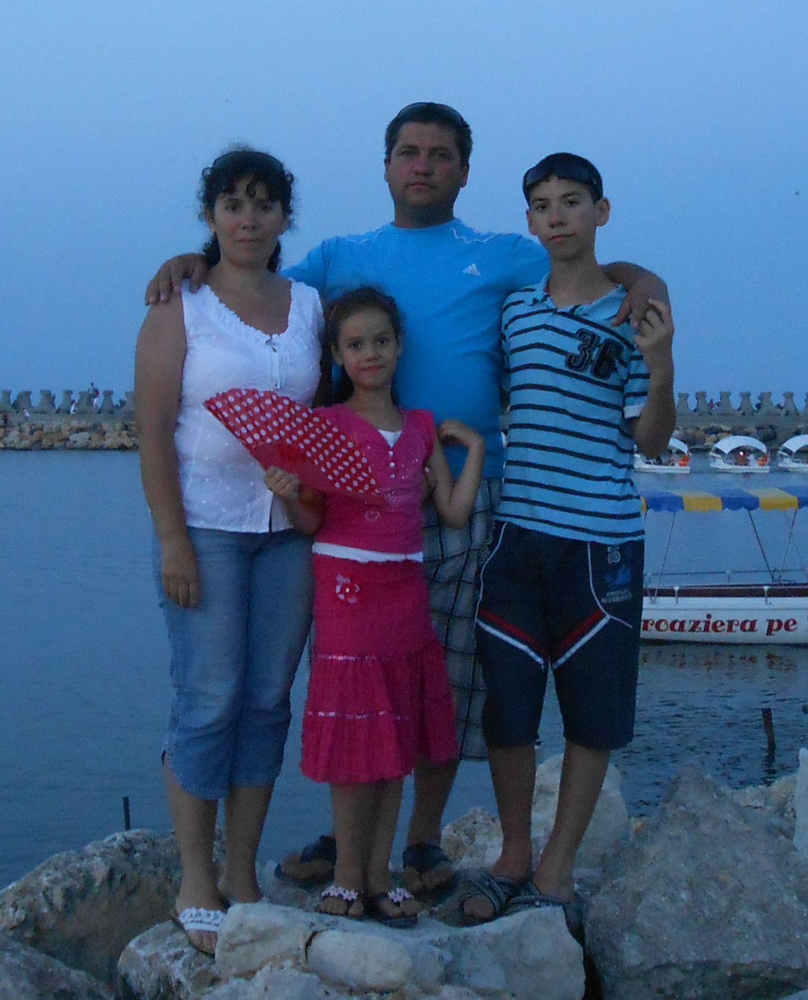

|
Familia mea
Bine ati venit!
Bine ati venit, pe aceasta pagina va voi prezenta familia mea!
Mama are 37 de ani, nascuta la data de 12 mai 1979, si lucreaza la firma SN DECO.
 Mama si tata
Mama si tata |

Mama
|
Tata
| Tata si cu mine |
Tata are 43 de ani, nascut la data de 29 decembrie 1973, si lucreaza la firma HZ de transport ca sofer.
|
Sora
| Sora mea |
Sora mea are 11 ani, nascuta la data de 2 noiembrie 2005, si este eleva in clasa a 5-a la Scoala Gimnaziala din Seica Mica.
| Sora mea si cu mine |
Eu
|  |
 |
 Eu si mama mea Eu si mama mea |
Eu am 16 ani, nascut la 30 mai 2000 si sunt elev la Scoala Nationala de Gaz in clasa a 10-a Matematica-Informatica.
Tabel al familiei
| Nume |
Data Nasterii |
Observatii |
| Ivan Ioan-Adrian | 20.05.2000 | Eu |
| Ivan Ana-Maria | 02.11.2005 | Sora mea |
| Ivan Elena | 12.05.1979 | Mama mea |
| Ivan Ioan | 29.12.1973 | Tatal meu |
Aceasta este familia mea!

|
|